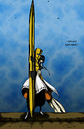

Zanpakuto
 De: La Frikipedia, la enciclopedia extremadamente seria.
De: La Frikipedia, la enciclopedia extremadamente seria.
Las Zanpakuto (del japonés: "cuchillo de carnicería") son consoladores espadas usadas por Shinigami capaces de purificar hollows y enviar a las almas buenas hacia la Suciedad de almas mediante un proceso llamado "Entierro del alma sin tierra" para cual se usa el extremo del mango del zanpakuto.
Cada shinigami tiene su propia Zanpakuto y en ella está reflejado el poder sexual de cada uno y adopta diferentes formas depende del tamaño del pene o tetas de su portador (o sea, puede ser que tengas una espadita microscópica o un semejante cuchillote que ni podrás llevarlo de lo que pesa).
Todas las Zanpakutos tienen un nombre y cada una está viva. Las Zanpakutos tienen personalidad propia que de alguna forma existe en el interior de su portador. Como regla general, a mayor tamaño del miembro o tetas fuerza espiritual, mayor tamaño de la zanpakuto, aunque esta regla no se aplica a los capitanes ya que saben limitar su poder espiritual para no andar con una zanpakuto del tamaño de una casa, ademas al ser las zanpakutoh mas unidas con el usuario, mientras mayor sea la exitacion dl usuario mayor sera la fuerza de sus atakes (que son el equivalente del chele y la leche que sale de los miembros y tetas).  Esto es una zanpakuto: parece sin lugar a duda un consolador, ¿o no?
Se le denomina Asauchi a la forma regular de una zanpakuto. El único poder que resalta es la capacidad de herir espíritus. Aparte del asauchi, las zanpakutos de los Shikai y Bankai.
Cabe decir que los Harrancar también portan una zanpakuto, la cual mantiene sellada la verdadera forma del Harrancar (contrario de las zanpakutos de los shinigami, que sella la forma de la misma). Las zanpakutos de los Harrancar no tienen Shikai ni Bankai, sino que se les dice "Resurrección". Se activan al pronunciar un comando acompañado del nombre de la espada, que les transforma dotándoles de sus verdaderos poderes como Hollows.
Zanpakutos de la serie
A continuación, una lista de los consoladores cuchillos de carnicero que aparecen en esta horrible serie:
Drogadictos AnonimosShinigamis
- Zangetsu (del japonés, "Medialuna de grasa filosa"): propiedad del Freso
- Zabimaru(del japonés, "Mono cola de bicharrajo"):Propiedad de renji, su bankai es un Quetzalcoatl.
- Hyorinmaru (del japones "Cagada de hielo del tamaño de mi cosa: propiedad del hermano de Edward Elric Choziro
- Ryujinyaka (del japones "La Calentorra"): pertenece al viejo cabron Yama
a matsumotomoto
- Tachikaze (del japones "Ventilador Cortante"): pertenece al Vizard cani
- Haineko (del japones "Neko buenasa tetuda" pertenece a la igualmente tetuda Matsumoto, extrañamente, el poder de su zanpakuto no corresponde al tamaño de sus pechos.
- Wabisuke (del japones "duplico el peso de tu..."katana" pertenece al hermano gay de la loca
- Suzumebachi (del japonés, "Abejorro Lésbico"): perteneciente a la capitana lesbi
- Ashisogi Jizo (del japones "si te la toco te la dejo aguada) : pertenece al tio de la sonrisa encantadora
- Hisagomaru (del japones "La espada mas mierda del mundo") pertenece a Hanatarou
- Hozukimaru (del japones "compenso del tamaño de tu pene) es del pelon.
- Kaken Kyokotsu (del japones "tan masculino como tu capa") pertenece al capitan pedofilo de capa floreada.
- Ka.se.chin.i. (abreviado "Kamasutra ser chingadamente imposible" pertenece al capitan gay del 69.
- Kyōka Suigetsu (del japones "puedo hacerte ver y sentir LO QUE SEA" pertenece al ex gafapasto pero tambien era el consolador de Momo Hinamori pero le gusto mas Tobi, U & Me.
Tenedor Gigante, Tridente de Satan, Tridente de Triton, Consolador de tres puntas Nejibama (del japones "soy perfecta para los tragones") es la espada del padre ilegitimo de Ichigo Kaien Shiba.- Shinsō (del japones "Consolador expandible...Ichimaru Corp) pertenece al zorro gay de Ichimaru Corp, por lo que se podria suponer que la verga de ichimaru tambien es expansible.
- Sode no Shirayuki (del japones "esclava sexual de piel blanca") pertenece a la tabla de planchar en miniatura
- Sōgyo no Kotowari (del japones "te la absorbo y te la regreso") pertenece al capitan con SIDA
- Suzumushi (es el nombre de un tipo especialde sushi) pertenece al negro ciego de tanto ver prOn
- Tenken (La frase favorita de la Barbie: Ten (Aqui pueden ir palabras como: mi sosten, mi panty, el dinero que gane como prosti, ect) Ken) pertenece a la perra (literalmente) de Tosen
- Tobi, U & Me (del inglés, "Tobi, Tu y Yo"): propiedad de la perra de Hitsugaya y Aizen (la tenencia de este
consolador cuchillote hace referencia a que a esta le van los tríos)
- Minazuki (del japonés, "Raya Voladora"): propiedad de Retsu Unohana
- Senbon Sakura (del japonés "El senbon de Planilandia): propiedad de cierto afeminado
- Vení, Hime (del español argentino, "Acércate, Orihime"): propiedad del tendero del Betis
- Ruriro Kujaku (del japonés "Pajarón Azul"): propiedad de cierto shinigami metro-homosexual
Victimas de las cirugias de corazon de HouseArrancar
- Ira (palabra abreviada de mira "ira a ese que esta alla") pertenece al hijo de hulk y Bush
- Los Lobos
se cogen a las lobas (del español Los Lobos) pertenece al pedofilo Stark, lo usa para mantener multiples relaciones zoofilicas con lilinette
- Arrogante (descripcion exacta de su usuario) propiedad del viejo cabron, que tiene miles de esclavos sexuales
- Tiburon (del español tiburon) pertenece a la morenaza tetona que se intento coger a Toshiro
- Gamuza (del español gamuza) propiedad de la Zoofilica tetona Neliel
- Murcielago (español de murcielago) pertenece a
Batman el Emo Ulqui
- Santa Teresa (persona "religiosa" o algo por el estilo) pertenece al grillo con pinta de mujer anorexica
- Pantera (español de pantera) transformacion en super sayayin 3 del esclavo sexual de Ulqui
- Trepadora (español de Trepadora) consolador multiple de
la espada de sexo indefinido que no duro ni 10 segundos en la serie, Luppi.
- Brujeria
, hice brujeriaaaa: (español de Brujeria) propiedad de cierto morenazo de 2,50 m
- Tendrás Sexo: (español de Tendras sexo) propiedad de "El Porro" Grantz
- Glotoneria: (español de glotoneria) propiedad de
uno de los miles que intento cogerse a RukiaAaroniero Arleri
- Cornuda: (español de Cornuda) propiedad de La Indígena (perra de Halibel)
- Serpentina: (español de Serpentina) propiedad de Sun-Sun (perra de Halibel)
- Leona: (español de Leona) propiedad de la negra racista (perra de Halibel)
- La tengo puntuda (español de La tengo puntuda) propiedad de Findor Carias (el que volvio a Charlotte mas masculino que antes)
- Aguila Pelona (español de lo mismo) propiedad de avirama redder (metrosexual de la fraccion de barragan)
- Tigre Estoque (español censurado de te salen dos vergas en las manos) pertenece a Ggio Vega (fraccion de Barragan)
- Calderon (apellido del presidente de mexico de 2006-2012) Pertencio a Felipe Calderon(Hace que sus lentes se vuelvan invicibles a la vista, y solo puede ser visto si se utiliza el kayoken)
- Reiiiiiiiiina de Rosaaaaaaaas: (español de Reiiiiiiiiina de Rosaaaaaaaas) propiedad de Charlotte (un travesti fracción de Barragan)
- Matafuego: (español de Matafuego) propiedad de Rain Man]
Otros
- Hassasin: Zanpakutoh de Gregory House esla espada mas poderosa del mundo, le permite matar a todos con solo mirarlos
- Terminator:Zanpakuto de Chuck Norris : su bankai es Zaraki Kempachi sin el parche
Autor(es):
- Kevrochi
- Grey-sama
- JoitaBandana
- Solidignacio
- ReverieM
- Kurosaki99
- Genericool
- Osloud
- Loveking
- Danieluzumaki
Frikipedia 2005-2016, Licencia
GFDL 1.2 - Extraído por FrikiLeaks